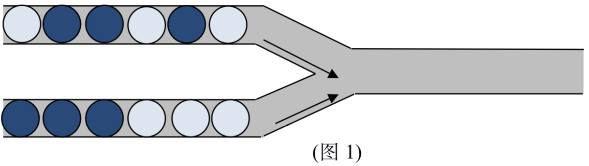
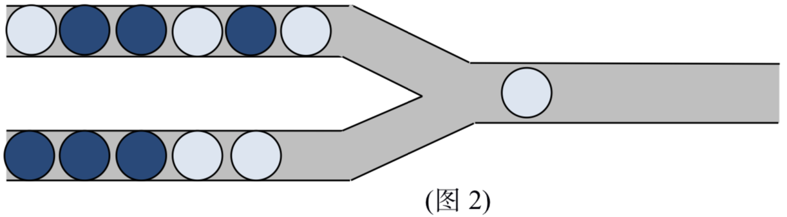
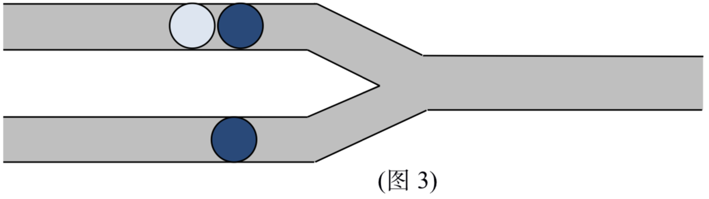

管道取珠是小X很喜欢的一款游戏。在本题中，我们将考虑该游戏的一个简单改版。游戏画面如图1所示：

游戏初始时，左侧上下两个管道分别有一定数量的小球（有深色球和浅色球两种类型），而右侧输出管道为空。每一次操作，可以从左侧选择一个管道，并将该管道中最右侧的球推入右边输出管道。
例如，我们首先从下管道中移一个球到输出管道中，将得到图2所示的情况。

假设上管道中有n个球,下管道中有m个球，则整个游戏过程需要进行n+m次操作，即将所有左侧管道中的球移入输出管道。最终n+m个球在输出管道中从右到左形成输出序列。
爱好数学的小X知道，他共有C(n+m,n)种不同的操作方式，而不同的操作方式可能导致相同的输出序列。举个例子，对于图3所示的游戏情形：

我们用A表示浅色球，B表示深色球。并设移动上管道右侧球的操作为U，移动下管道右侧球的操作为D，则共有C(2+1,1)=3种不同的操作方式，分别为UUD,UDU, DUU；最终在输出管道中形成的输出序列(从右到左)分别为BAB，BBA，BBA。可以发现后两种操作方式将得到同样的输出序列。
假设最终可能产生的不同种类的输出序列共有K种，其中第$i$种输出序列的产生方式（即不同的操作方式数目）有$a_i$个。聪明的小X早已知道，$\sum_{i=1}^{k}a_i=C(n+m,n)$
因此，小X希望计算得到$\sum_{i=1}^{k}a_i^2$
你能帮助他计算这个值么?由于这个值可能很大，因此只需要输出该值对1024523的取模即可（即除以1024523的余数）。
说明：文中C(n+m,n)表示组合数。组合数C(a,b)等价于在a个不同的物品中选取b个的选取方案数。
 Comet OJ
Comet OJ